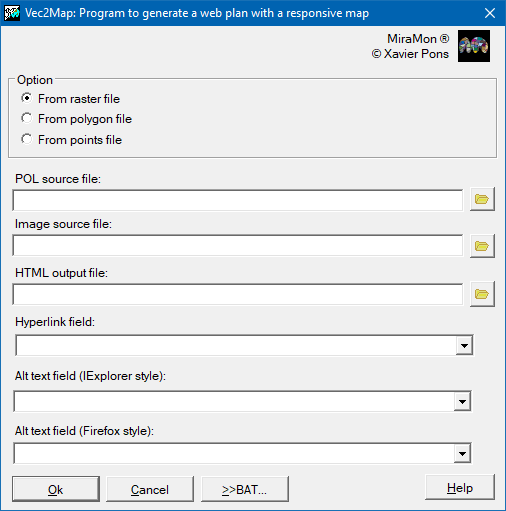

-
 Vec2Map: Create an HTML map
Vec2Map: Create an HTML map
Vec2Map: Create an HTML map| Presentation and options | Dialog box of the application |
| Syntax |
This application generates a web page with an interactive image map from a VEC file of polygons, POL or PNT, and a raster image in GIF or JPG format. If working with a POL or PNT file, you can define the properties of the map's sensitive areas using metadata information.
Option 1, from raster file, is designed to take advantage of MiraMon digitizing functions to define active regions inside an image that will be included in an HTML page. First, it is needed to have the GIF or JPG raster image in which the active regions have to be defined. This image may be a screenshot in MiraMon of a small map. To obtain it, display the map with MiraMon, set the desired size using the zoom level and the application window size, capture the MiraMon screen with Alt+Print Screen, and paste it into an image-editing program such as Corel PhotoPaint or Adobe Photoshop. Alternatively, the image can be generated from the MiraMon print module by printing directly to a JPEG file. For thematic images it is recommended to save in GIF format, and for continuous images in JPG format. Also, a version in BMP or JPEG format has to be saved so that it can be opened in MiraMon. Make a note of the number of rows and columns of the raster image.
Open the printed file in MiraMon with the Open raster option and digitize the desired active areas into a VEC polygon file with string attributes. As an attribute of each active area, provide the HTML link text followed by a comma and the link descriptor. This descriptor will be visible in some browsers when the mouse pointer hovers over the active area.
Once the VEC file is complete, use this application to generate the web page. Then edit the HTML page with the usual code editor and add any additional content.
Option 2, from polygon file, allows to work with a structured polygon vector .pol directly in ground coordinates (the file does not need to be digitized over the printed image in pixel coordinates, as in option 1). In this case, a JPEG file with a number of rows and columns small enough to be displayed comfortably in HTML, and georeferenced, is needed. MiraMon print application produces low-resolution, georeferenced JPEG files if a small number of rows and columns is specified. Note that sensitive areas can be overlapped. To do this, first generate the larger sensitive areas and then the smaller ones, saving them in different output files.
Option 3, from point file, allows to generate an interactive HTML image map from a structured point vector .pnt. The sensitive areas will be rectangular, with the desired height and width passed in the execution parameters Height and Width. As with option 2, it is possible to work with a PNT file directly in ground coordinates if the JPEG file is low-resolution and georeferenced. The Orientation parameter specifies where these rectangles are drawn relative to each point.

 |
| Vec2Map dialog box |